✈️ Telegram
Защитите аккаунт за 7 шагов
Следуйте инструкции. На каждом шаге — текст и скриншоты.
1
Шаг 1 из 7
Установите код-пароль
Заблокируйте доступ к приложению PIN-кодом или отпечатком пальца.
Совет
Если нужно подобрать надёжный пароль, воспользуйтесь вкладкой Тестер пароля.
→ Настройки → Конфиденциальность → Код-пароль

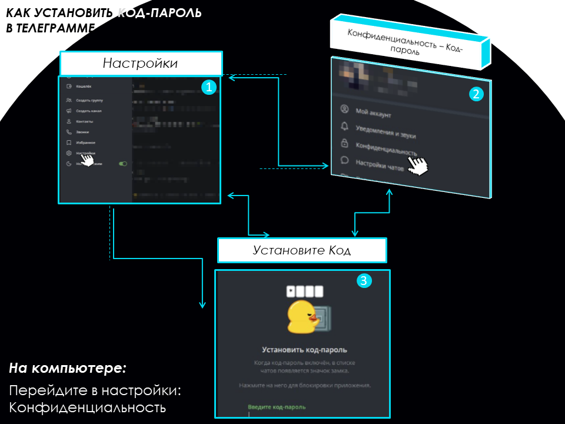
2
Шаг 2 из 7
Включите облачный пароль (2FA)
Дополнительная защита при входе с нового устройства.
→ Настройки → Конфиденциальность → Облачный пароль
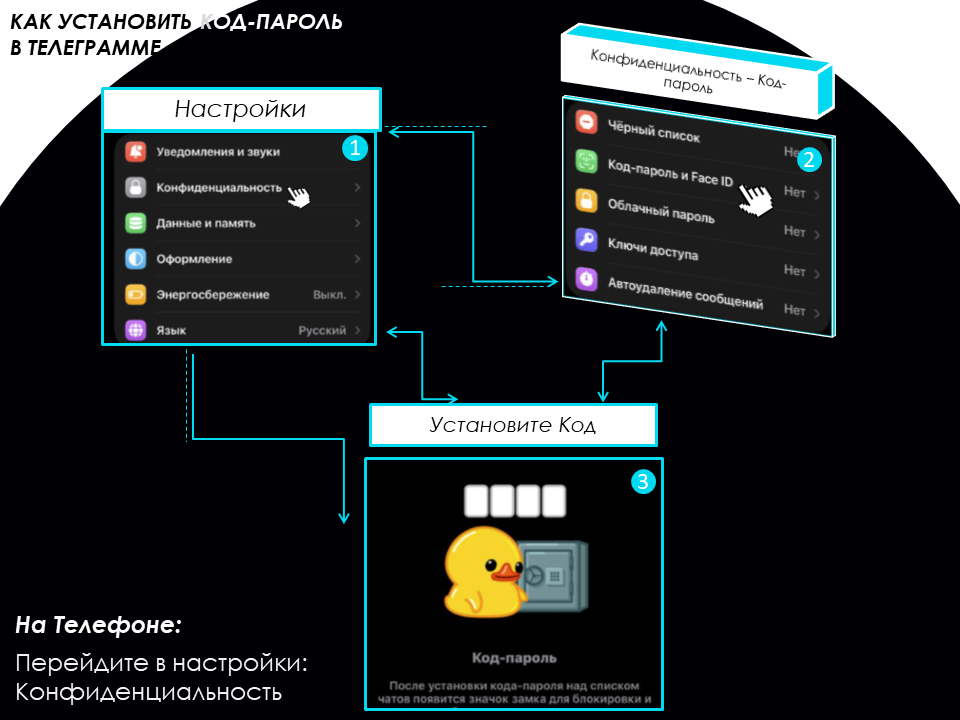
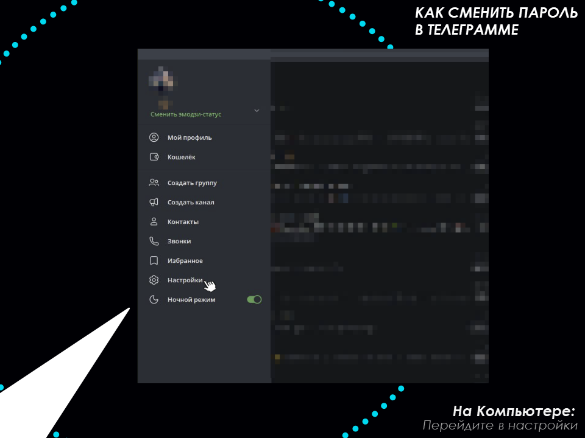
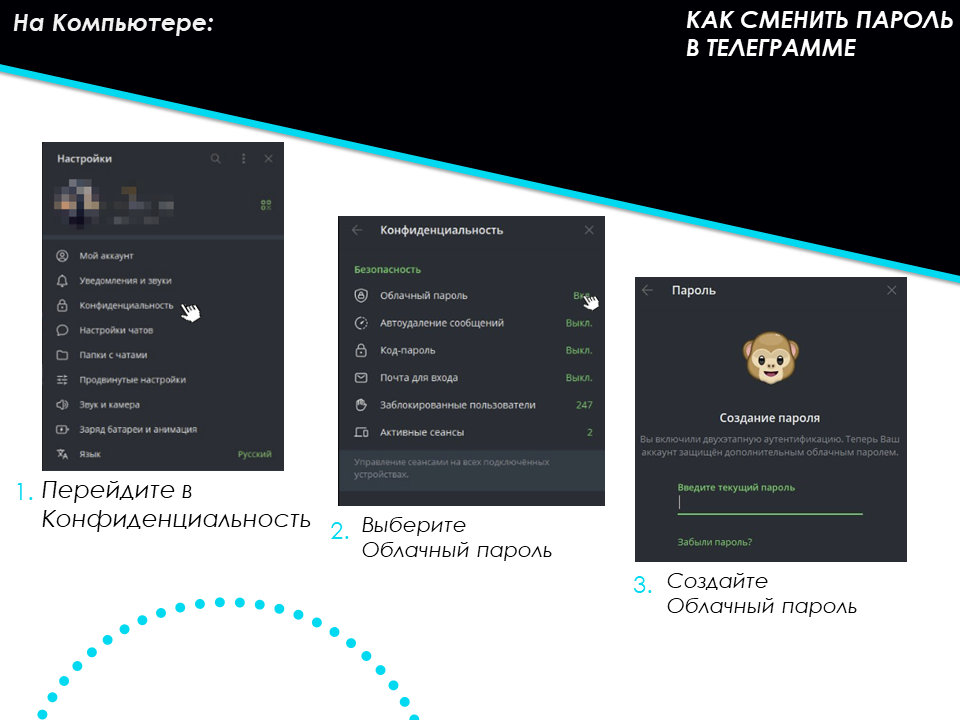
3
Шаг 3 из 7
Проверьте активные сеансы
Убедитесь, что в список вошли только ваши устройства.
→ Настройки → Устройства → Завершить все другие сеансы
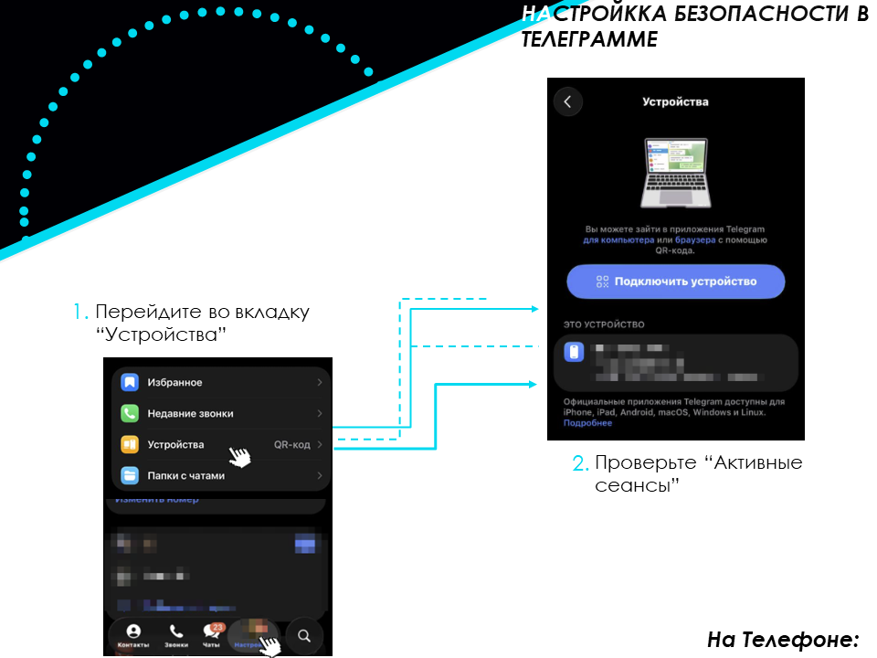
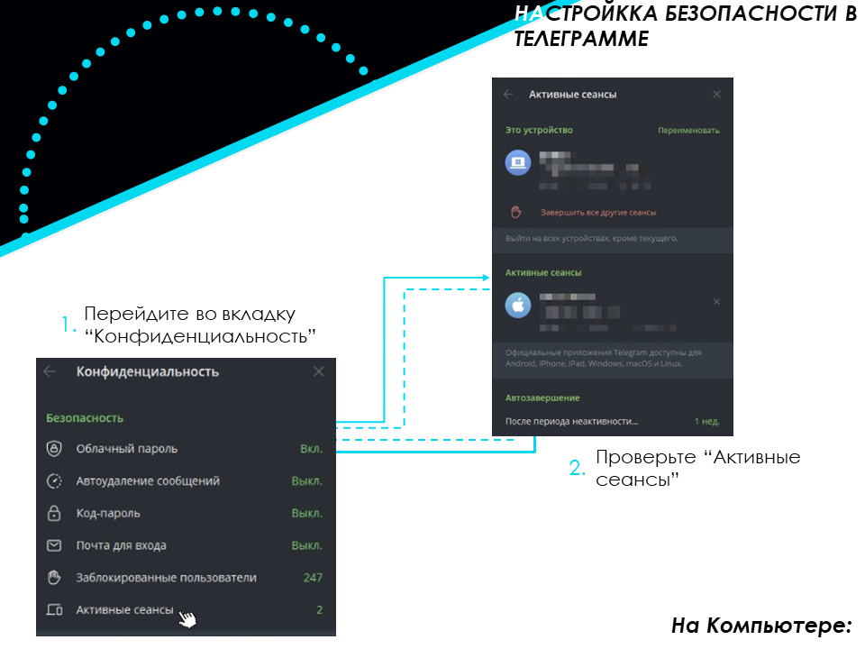
4
Шаг 4 из 7
Скройте номер телефона
Сделайте номер невидимым для всех, кроме ваших контактов.
→ Настройки → Конфиденциальность → Номер телефона → Никто
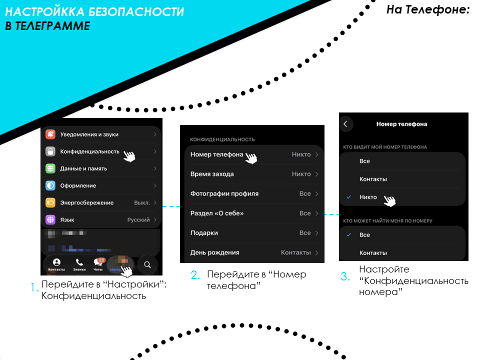
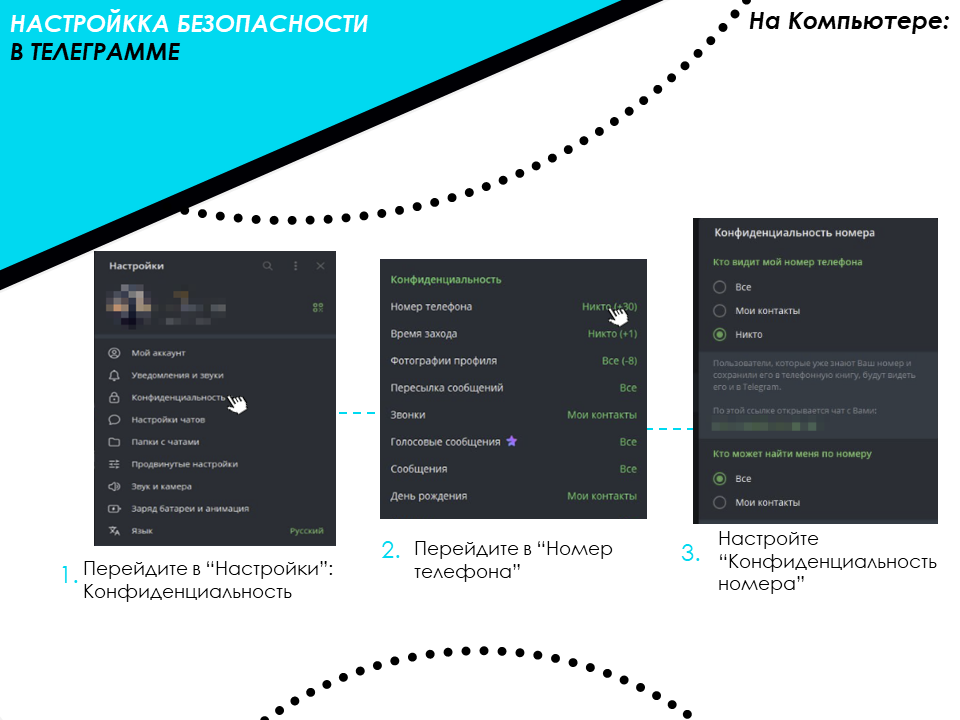
5
Шаг 5 из 7
Ограничьте фото профиля
Запретите незнакомцам сохранять и пересылать ваше фото.
→ Настройки → Конфиденциальность → Фото и видео → Мои контакты
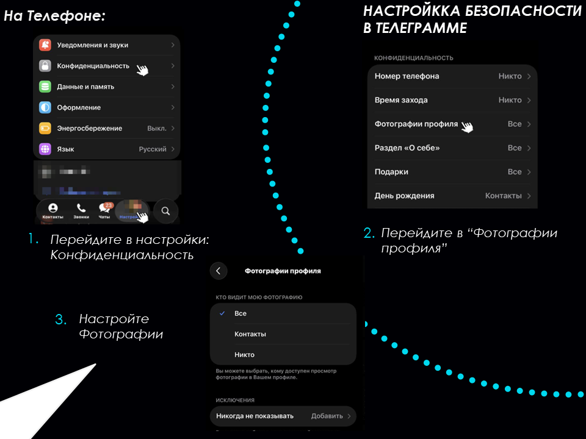
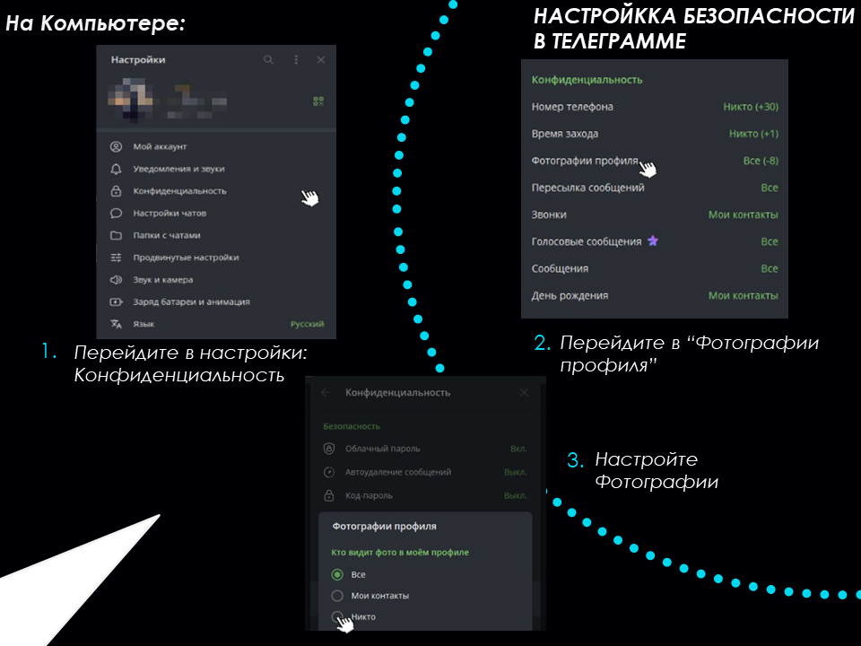
6
Шаг 6 из 7
Запретите пересылку
Скройте ссылку на ваш профиль при пересылке сообщений.
→ Настройки → Конфиденциальность → Пересылка сообщений → Никто
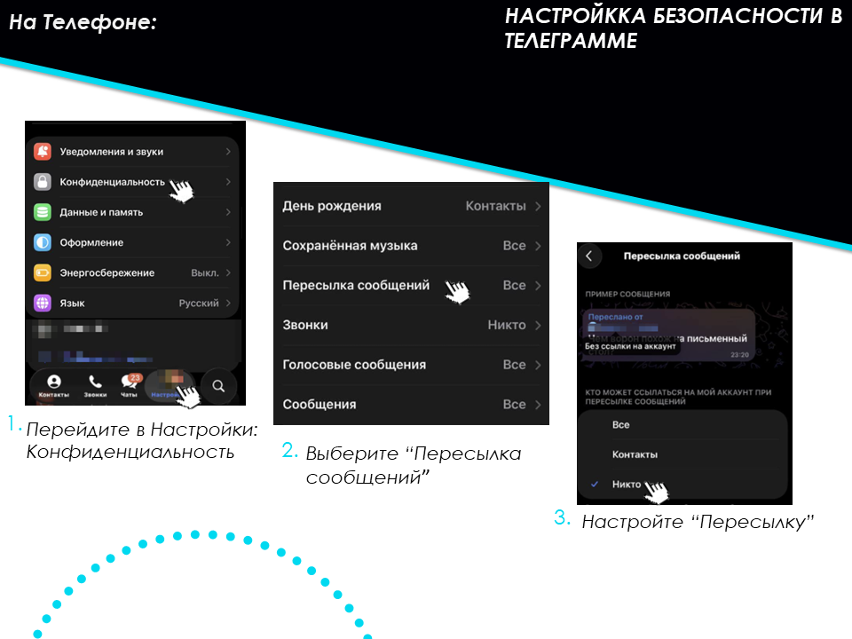
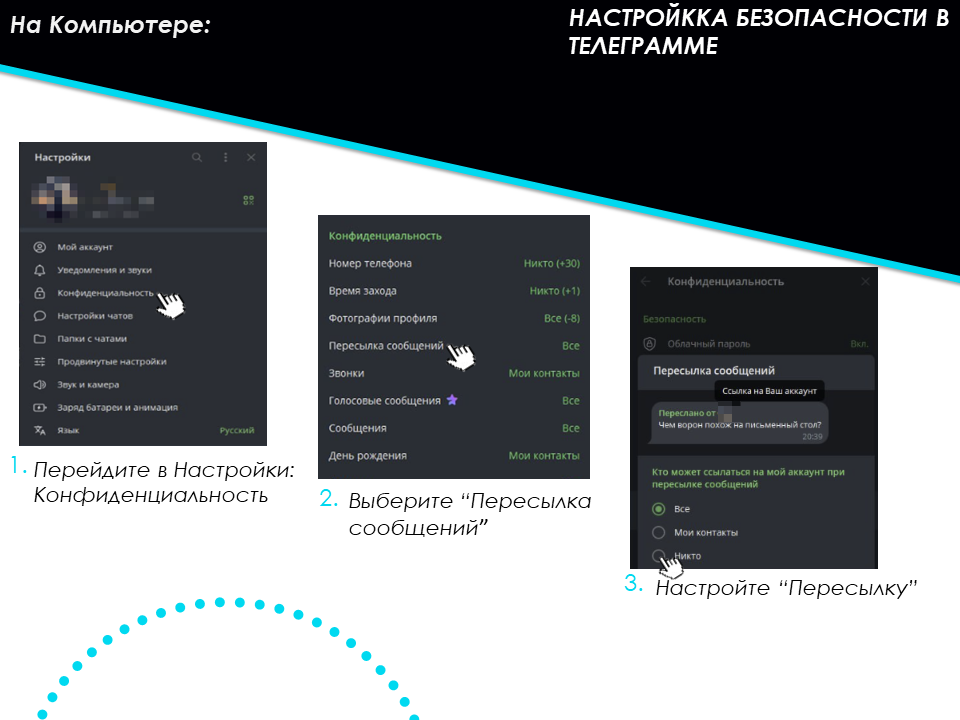
7
Шаг 7 из 7
Настройте автоблокировку
Автоматически требуйте код-пароль через 1 минуту неактивности.
→ Настройки → Конфиденциальность → Код-пароль → Автоблокировка
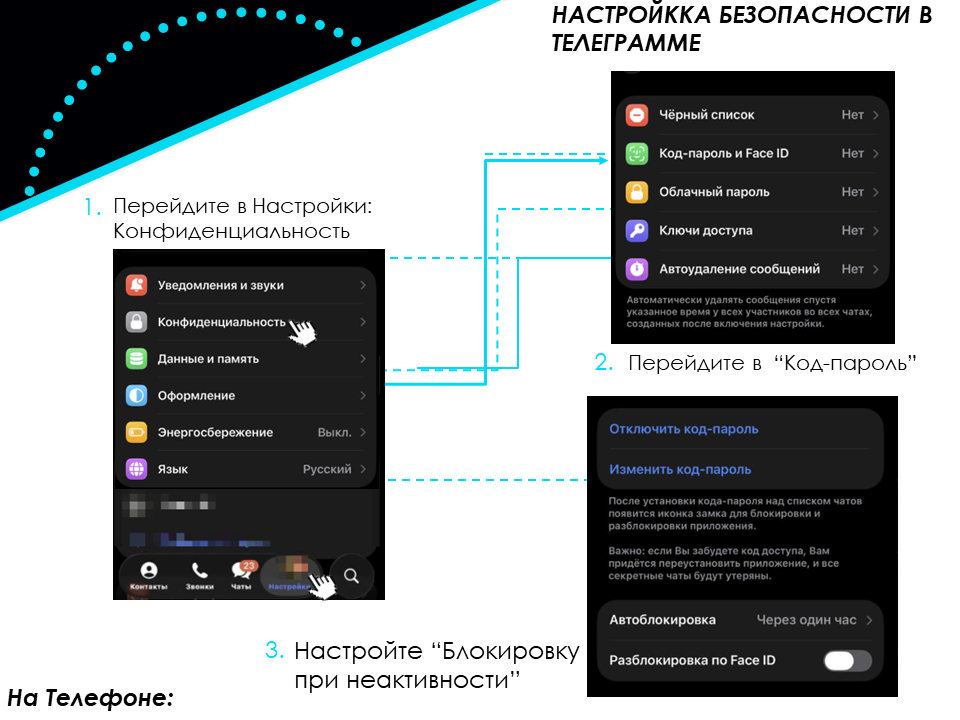
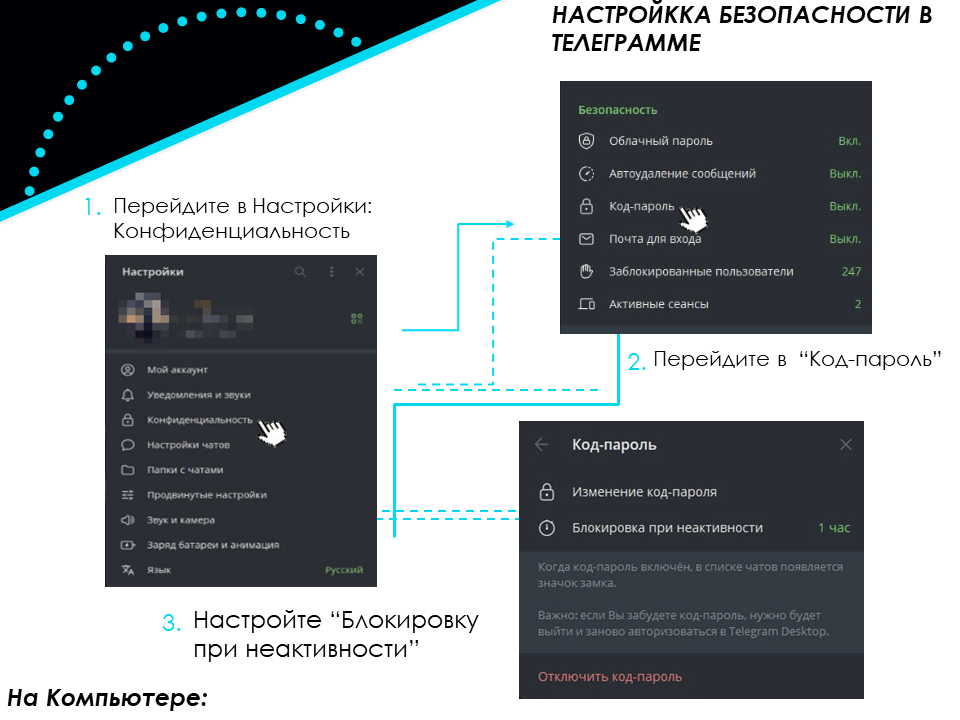